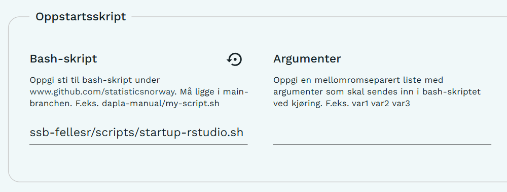

Hvordan ta i bruk oppstartsskript for RStudio i Dapla Lab
Sindre Mikael Haugen
2026-09-17
vignette_startup_rstudio_dapla_lab.RmdDapla Lab støtter bruk av egne Bash-skript som kjøres automatisk når
en tjeneste starter. Se Dapla-manualen
for generell informasjon om oppstartsskript. Denne veiledningen viser
hvordan oppstartsskriptet for RStudio i ssb-fellesr tas i
bruk.
Oppstartsskriptet kan brukes for å klargjøre et R-prosjekt automatisk
når en RStudio-tjeneste startes i Dapla Lab. Skriptet finner Git-repoet
som er valgt i Dapla Lab, setter dette som arbeidsmappe og gjenoppretter
prosjektets renv-miljø fra renv.lock. Dersom
repoet inneholder en .Rproj-fil med samme navn som repoet,
åpnes prosjektet automatisk i RStudio.
Kort oppsummert blir alle pakkene i R-prosjektet installert før tjenesten startes, og prosjektfilen åpnes automatisk ved oppstart.
1. Velg Git-repoet du skal arbeide med
I konfigurasjonen av RStudio-tjenesten må Git
repository være satt til repoet du ønsker å arbeide i.
Oppstartsskriptet bruker denne innstillingen
(GIT_REPOSITORY) til å finne navnet og plasseringen til
prosjektet.
2. Legg inn oppstartsskriptet
Gå til Avansert → Oppstartsskript og legg til følgende under Bash-skript:
ssb-fellesr/scripts/startup-rstudio.shFeltet Argumenter kan stå tomt. Skriptet bruker per i dag ingen argumenter.

3. Start RStudio-tjenesten
Ved oppstart vil skriptet blant annet:
- sette repoet som standard arbeidsmappe
- aktivere
renvog kjørerenv::restore()fra prosjektetsrenv.lock - åpne
<repo-navn>.Rprojautomatisk ved oppstart dersom filen finnes
For å få fullt utbytte av oppstartsskriptet anbefales det derfor at repoet inneholder:
renv.lock
<repo-navn>.Rprojrenv.lock sørger for at riktige pakkeversjoner
installeres. .Rproj-filen er valgfri, men gjør at
prosjektet åpnes automatisk når RStudio starter.
Skriptet legger også inn kode for automatisk åpning av
RStudio-prosjektet i .Rprofile. Denne koden legges bare til
dersom rstudioapi::openProject ikke allerede finnes i
filen, slik at den ikke legges til på nytt hver gang tjenesten
startes.
4. Feilsøking
Dersom noe går galt under oppstart, kan du se i loggfilene som
opprettes i /home/onyxia/.
Oppstartsskript og andre oppstartsprosesser skriver informasjon om
hva som har blitt kjørt, og eventuelle feilmeldinger, til loggfiler i
denne mappen. Disse er ofte det beste stedet å starte dersom
prosjektfilen ikke åpner som forventet eller
pakkeinstallasjon/renv::restore() feiler.
De to viktigste loggfilene er:
-
personal_init_script.log– inneholder output fra oppstartsskriptet som er konfigurert i Dapla Lab. Her kan du se hvilke kommandoer som ble kjørt og eventuelle feilmeldinger fra selve oppstartsskriptet. -
renv-startup.log– inneholder logging frarenv-delen av oppstarten. Her vil du typisk finne informasjon om aktivering avrenv,renv::restore(), installasjon av pakker og eventuelle feil knyttet tilrenv.lockeller pakkeinstallasjon.
Du kan for eksempel lese loggene fra terminalen med:
5. Personlige oppstartsskript
Oppstartsskriptet i ssb-fellesr er ment som et minimalt
og felles utgangspunkt for RStudio i Dapla Lab, og anbefales for brukere
som først og fremst ønsker automatisk oppsett av R-prosjektet og
renv-miljøet.
Det er samtidig mulig å lage et eget oppstartsskript dersom du ønsker
å tilpasse tjenesten ytterligere. Du kan enten kopiere oppsettet fra
ssb-fellesr og bygge videre på dette, eller lage et helt
eget Bash-skript.
Et oppstartsskript kan i utgangspunktet brukes til å automatisere oppgaver som du ellers måtte gjort manuelt etter at tjenesten har startet. Et personlig oppstartsskript kan for eksempel brukes til å:
- endre tema og andre innstillinger i RStudio eller JupyterLab
- sette opp egne hurtigtaster, aliaser eller miljøvariabler
- laste ned flere Github-repoer automatisk
- installere Python-pakker eller andre avhengigheter
- konfigurere Java eller andre programmer som brukes fra R
- gjøre andre tilpasninger av arbeidsmiljøet
Du kan ta utgangspunkt i startup-rstudio.sh
og kopiere relevante deler til ditt eget skript.
For å bruke et eget oppstartsskript må skriptet ligge i
main-branchen i et repo under
github.com/statisticsnorway. I tjenestekonfigurasjonen i
Dapla Lab angir du deretter stien til skriptet under Avansert →
Oppstartsskript.
Hvis skriptet for eksempel ligger her:
https://github.com/statisticsnorway/mitt-repo/blob/main/scripts/startup-rstudio.shskal følgende legges inn under Bash-skript:
mitt-repo/scripts/startup-rstudio.shEksempler til inspirasjon
Følgende kan brukes som eksempler på hva oppstartsskript kan inneholde:
De personlige eksempelskriptene er kun ment som inspirasjon. De er ikke felles oppstartsskript som anbefales brukt direkte, og innholdet kan endres av eieren uten varsel. Kopier derfor heller relevante deler til ditt eget oppstartsskript og tilpass dem til behovene i prosjektet ditt.